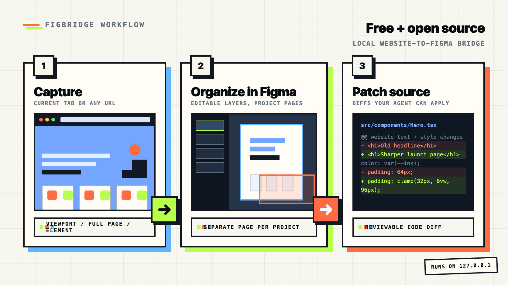

URL
Import live URLs into Figma
Headless Chrome walks the DOM and rebuilds native Figma frames for public pages.
import_url
live
A free, open-source Figma plugin and MCP server for URL import, current-tab capture, AI-agent inspection, responsive audits, and source patches. Free. Open source. Built for the community.

Start with a faithful capture, then keep moving through local MCP inspection, audits, and source patches.
Headless Chrome walks the DOM and rebuilds native Figma frames for public pages.
import_url
live
Turn raw HTML or structured specs into editable canvas nodes.
import_from_code
The Chrome/Edge extension sends visible viewports or selected elements to localhost.
chrome-extension/
Measure mobile, a11y, whitespace, typography, and palette issues.
audit_mobile
Diff design edits against the live source and produce a patch plan.
diff_to_source + generate_patch
Export hierarchy, screenshots, tokens, issues, and stable change diffs.
get_agent_bundle
The strongest Figbridge story is not just "convert a website." It is "capture a website, organize it in Figma, let design and code collaborate, and close the loop in your repo."
Import a URL, HTML snippet, browser viewport, or selected page element into Figma as editable layers.
Each captured site can land on its own Figma page, so projects do not pile up on one canvas.
Run deterministic audits for a11y, mobile, typography, palette, and spacing.
Generate source diffs after design edits instead of manually translating screenshots.
Fast captures start with what is on screen, including a screenshot reference layer when you want one.
Chrome viewport
Long pages are opt-in, so complex marketing sites do not accidentally create massive imports.
Full page DOM
Captures are grouped as pages like Chrome Capture - Raycast, Chrome Capture - Framer, and staging dashboards.
pageName
Figbridge is strongest when capture, inspection, audit, and source changes live in one local workflow.
| Capability | Figbridge today | Why it matters | Next upgrade |
|---|---|---|---|
| Import by URL | Available through import_url |
Bring a live webpage into Figma without rebuilding it by hand. | Add a gallery of real import examples with fidelity notes. |
| Private or logged-in pages | Chrome/Edge extension captures the visible viewport, full page, or a selected element to localhost | Design teams often need authenticated dashboards and staging views. | Add multi-step authenticated flows and capture progress controls. |
| Paste HTML / code import | import_from_code supports raw HTML/spec input |
Useful for prototypes, generated pages, emails, and local snippets. | Show it as a first-class workflow with before/after preview. |
| Multiple viewports | import_responsive_set imports viewport sets into one workflow |
Review desktop, tablet, and mobile states side by side. | Add visual progress in the plugin UI. |
| Per-project organization | Browser captures can create/reuse separate Figma pages per website or project | Separate pages keep Example, Raycast, Framer, staging, and local app captures navigable. | Add capture history and rename controls in the extension popup. |
| Light/dark themes | Responsive sets can include light and dark color schemes | Keep design review honest across theme modes. | Add a visible theme picker in the plugin UI. |
| Auto layout | Figma auto-layout is created from structured specs; URL import focuses on fidelity | Editable imports should preserve the structure designers expect. | Infer flex/grid containers from DOM and map them into Figma auto layout. |
| Hover variants / prototypes | audit_interactions detects interactive elements and pseudo-state CSS |
Interaction states are where static captures usually feel unfinished. | Capture pseudo-states and componentize repeated states. |
| Bulk imports | import_url_batch imports URL lists |
Teams can pull a product surface into Figma, not just a single page. | Add progress UI and per-page audit summary. |
| Risk checks | preflight_import flags capture blockers and downloadable font assets before import |
Bad imports should be explainable before users spend time debugging them. | Turn warnings into guided fixes inside the plugin UI. |
| Pixel reference fallback | hybridSnapshot adds a screenshot reference under editable layers |
Generated, video-heavy, or animation-heavy pages still need a visual truth layer. | Auto-enable it only for high-risk regions after visual diff. |
| MCP workflows | The core product: 45 MCP tools and live bridge | Agents can inspect, mutate, audit, and prepare source patches. | Publish recipes for common design-to-code tasks. |
| Local data model | Free, MIT, local, unlimited, no account | Design and source context stay on localhost by default. | Make privacy guarantees visible in the install flow. |
The product stays strongest when it keeps capture practical, local, and connected to source code.
The first screen should answer what it is, why it is free, and what happens next.
Large pages need clear choices before import starts.
The value is not capture alone.
Adoption through docs, examples, and public validation.
The tool surface is broad enough for full agent workflows, from read-only inspection to Figma mutations and repo-aware patch planning.
Selection, history, pages, frames, tokens, and bridge status.
Screens, components, assets, app specs, all pages, specific nodes.
Clone screens, recolor, apply tokens, lint design systems.
Import URLs, screenshot pages, probe DOM, fingerprint sites, measure fidelity.
Diff Figma edits against source and generate minimal patch instructions.
Palette, typography, accessibility, whitespace, and mobile responsiveness.
Offline zip with hierarchy, tokens, screenshots, issues, changes, and AGENTS.md.
HTTP+SSE on 127.0.0.1, stdio MCP for agents, no external servers.
The MCP server is on npm and the official MCP registry. The Figma plugin is currently loaded from this repo until the Community listing lands.
# 1. Install/update the MCP server npx figbridge-mcp init # 2. Get the Figma plugin git clone https://github.com/rudraptpsingh/figbridge # 3. If Claude gets stuck npx figbridge-mcp doctor
Restart Claude Desktop. It reads MCP config on launch and starts figbridge-mcp@latest.
Import the plugin manifest. In Figma: Plugins -> Development -> Import plugin from manifest, then choose plugin/manifest.json.
Toggle Live bridge. A green dot means the plugin is connected to the local bridge on port 7331 or a fallback port.
Ask your agent. Try "import this URL into Figma" or "what tools does figbridge expose?"